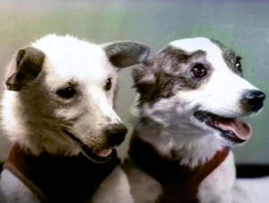

Белка и Стрелка
 Белка и Стрелка — советские собаки-космонавты, совершившие космический полёт на корабле «Спутник-5» 19 августа 1960 года.Основной целью полёта было исследование влияния на организм животных и других биологических объектов факторов космического полёта: перегрузка, длительная невесомость, переход от перегрузок к невесомости и обратно, изучение действия космической радиации на животные и растительные организмы, на состояние их жизнедеятельности и наследственность, отработка систем, обеспечивающих жизнедеятельность человека, безопасность полёта и благополучное возвращение на Землю. Также было проведено несколько медико-биологических экспериментов и научных исследований космического пространства.Полёт продолжался более 25 часов. За это время корабль совершил 17 полных витков вокруг Земли. Белка и Стрелка стали первыми животными, которые совершили орбитальный космический полёт и успешно вернулись на Землю.
19 августа 1960 года в 11:44 по московскому времени со стартового комплекса № 1 был осуществлён успешный запуск второго космического корабля-спутника. Кабину, в которой находились Белка и Стрелка, поместили в корабль за два часа до старта. Подготовкой корабля к запуску руководил лично Сергей Павлович Королёв. Во время старта и набора высоты у собак наблюдались сильно учащённые дыхание и пульс, но когда корабль был выведен на орбиту, они успокоились.
Система жизнеобеспечения, установленная в кабине корабля-спутника, полностью обеспечивала нормальную жизнедеятельность животных. Давление, температура и влажность воздуха в кабине корабля обеспечивались системами жизнедеятельности в пределах установленной нормы. Периодически проводилась очистка воздуха. Автоматы кормления обеспечивали пищей и водой Белку и Стрелку два раза в сутки, в рамках эксперимента по возможности приёма пищи в невесомости. Регистрацию физиологических функций в течение всего полёта обеспечивал специально разработанный комплект медицинской исследовательской аппаратуры. Установка для регенерации воздуха содержала специальное регенерационное вещество, которое поглощало углекислоту и водяной пар и выделяло при этом необходимое количество кислорода. Запас регенерационного вещества обеспечивал потребности животных в кислороде в течение продолжительного времени.
Наблюдение за состоянием и поведением собак впервые велось с помощью телевизионной системы. Видеоинформация, передававшаяся с борта корабля во время прохождения корабля-спутника в зоне действия наземных приёмных пунктов, регистрировалась на киноплёнку. В дальнейшем при просмотре этой плёнки можно было определить, как вело себя животное в определённый момент и какие физиологические изменения в этот период происходили. Кроме того, информация, накопленная во время нахождения корабля вне зоны видимости наземных служб, передавалась на Землю позднее. В полёте регистрировались частота пульса, дыхания, артериальное давление (в сонных артериях), электрокардиограммы, фонокардиограммы (тоны сердца), двигательная активность животных и температура тела. Координация движения животных изучалась с помощью телевидения и контактно-реостатных датчиков, воспринимавших движения животных и передававших о них по телеметрии. Медицинская информация с борта корабля-спутника передавалась на наземные радиотелеметрические системы. Врачи-физиологи обрабатывали полученные данные и специальным кодом передавали их в центр управления полётом. Информация обрабатывалась с помощью ЭВМ. После стресса, вызванного взлётом, Белка и Стрелка вели себя спокойно, вначале даже немного вяло. Несмотря на перегрузки и вибрацию вначале, собаки с аппетитом ели свою специализированную пищу. Состояние невесомости не оказывало существенного воздействия на систему кровообращения. Температура тел собак не изменялась в течение всего полёта. Однако после четвёртого витка вокруг Земли Белка почему-то стала крайне беспокойна, пыталась вырваться из привязных ремней и лаяла. Её стало тошнить. Несмотря на это, послеполётные анализы не выявили у Белки особых отклонений от нормы. Через несколько часов после старта выяснилось, что на корабле отказал датчик инфракрасной вертикали, поэтому для предпосадочной ориентации была использована резервная солнечная система.
20 августа 1960 года в 13:32 МСК на 18 витке с Земли была дана команда на запуск цикла спуска. Была включена тормозная двигательная установка, и корабль сошёл с орбиты. Через некоторое время спускаемый аппарат успешно приземлился в заданном районе (треугольник Орск-Кустанай-Амангельды) в 10 км от расчётной точки. Программа была выполнена полностью. По первому визуальному осмотру, когда специалисты прибыли на место приземления, было видно, что Белка и Стрелка чувствуют себя удовлетворительно. Иногда во время тренировок в центре подготовки бывало, что собаки выглядели хуже.
За время своего полёта Белка и Стрелка преодолели расстояние в 700 тыс. км.
Эксперимент суточного орбитального полёта Белки и Стрелки на втором космическом корабле-спутнике являлся существенным вкладом в изучение и освоение космического пространства. Объём проведённых исследований и характер решаемых при этом задач позволили сделать выводы о возможности человека совершить орбитальный полёт вокруг Земли. Во время полёта Белки и Стрелки и, согласно результатам, полученным после него, учёными были получены уникальные научные данные о влиянии факторов космического полёта на физиологические, биохимические, генетические и цитологические системы животных (в том числе и млекопитающих) и растений.
У Белки и Стрелки после орбитального полёта биохимические исследования показали, что суточный полёт вызвал у них реакцию типа «стресс», но на Земле эти отклонения быстро возвратились к исходным значениям. Было сделано заключение о временности данной реакции во время полёта. Заметных изменений в обмене веществ также не было обнаружено. Учёных насторожили некоторые особенности физиологического состояния собаки Белки, которая после четвёртого витка стала крайне беспокойной, билась и пыталась освободиться от элементов крепления. Собака лаяла, было отчётливо видно, что она плохо себя чувствует, хотя её попутчица Стрелка весь полёт провела спокойно. Никаких отклонений в проведённых послеполётных анализах у собак не наблюдалось. Были сделаны выводы, что необходимо осторожно подходить к вопросам планирования предстоящего полёта человека в космос. На основании этого было принято решение ограничить полёт первого человека в космос минимальным количеством витков. Так что Белка фактически предопределила одновитковый полёт первого космонавта Юрия Алексеевича Гагарина.
После того как данный эксперимент показал, что возможен безопасный спуск с орбиты, была создана специальная поисково-спасательная служба. В её состав также входили и научные сотрудники, готовившие Белку и Стрелку к полёту, и хорошо знавшие их индивидуальные особенности, чтобы на месте приземления оперативно и точно определить состояние собак.
На следующий день после возвращения собак из космоса была организована пресс-конференция в ТАСС.
Через несколько месяцев после полёта Стрелка принесла здоровое потомство из шестерых щенков. Белка и Стрелка жили при Государственном научно-исследовательском и испытательном институте авиационной и космической медицины и умерли в глубокой старости. В настоящее время их чучела находятся в Мемориальном музее космонавтики в Москве.